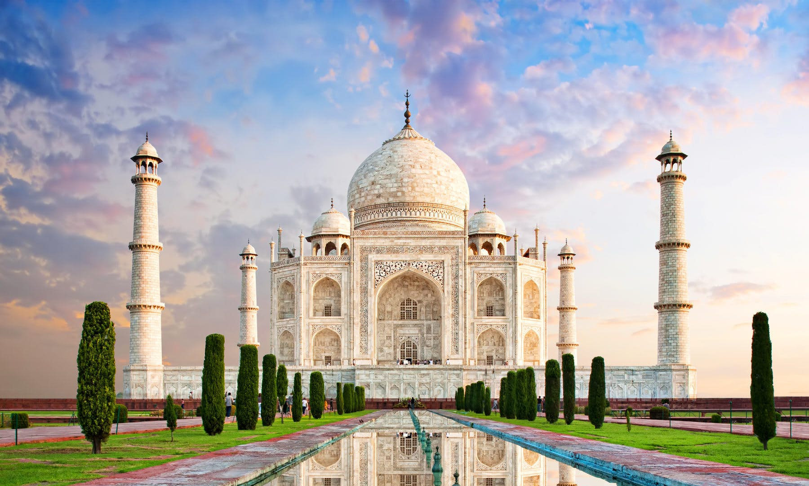
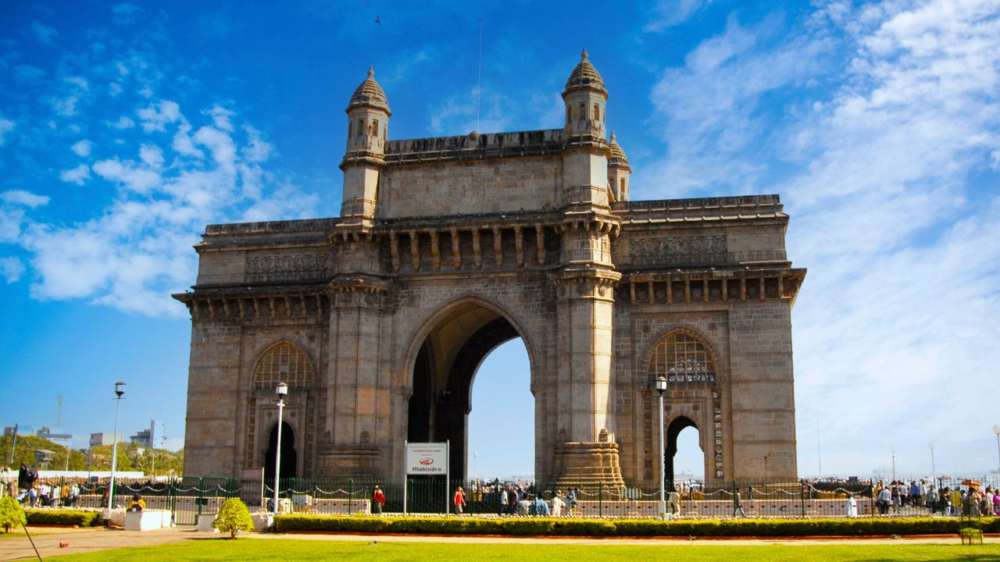
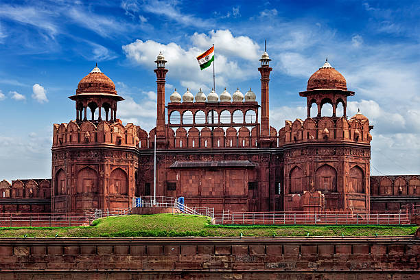
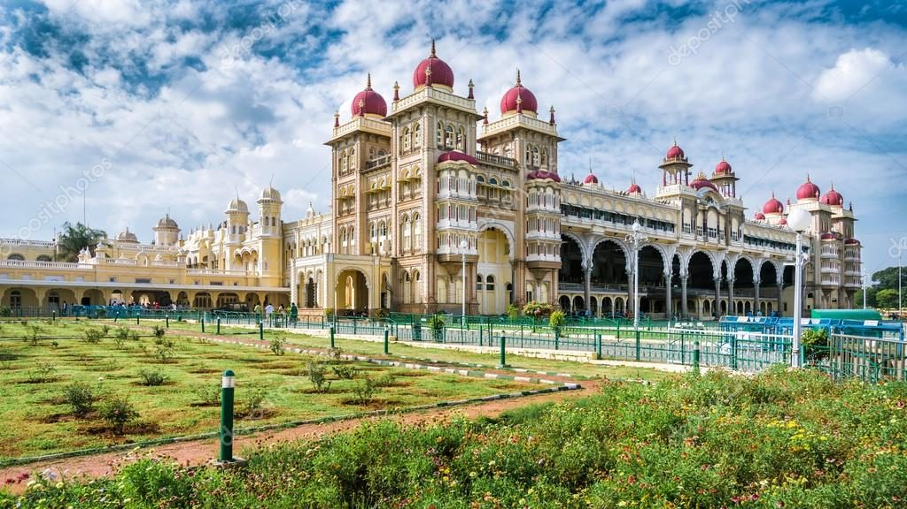
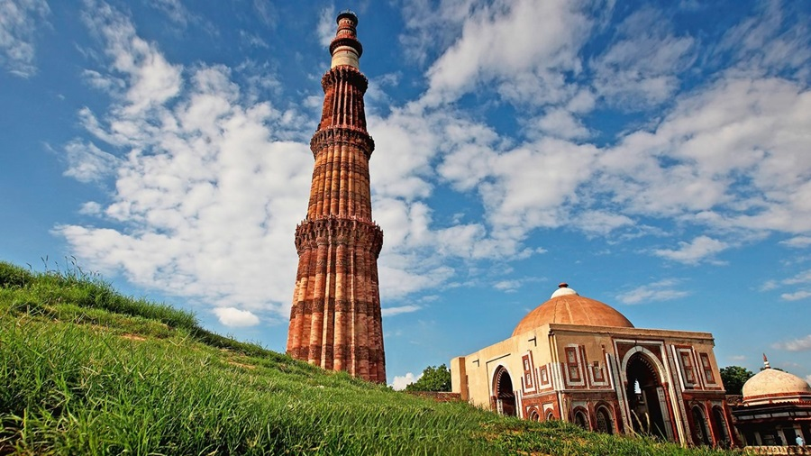

Taj Mahal
- Taj Mahal is a famous white marble mausoleum located in Agra.
- It was built by Shah Jahan in memory of his wife Mumtaz Mahal.
- Construction began in 1632 during the Mughal Empire and took about 20 years to complete.
- The Taj Mahal is recognized as a UNESCO World Heritage Site.

Amber Palace
- Amber Palace is a famous fort and palace in Jaipur.
- It was built by Raja Man Singh I.
- The palace is known for its beautiful architecture made of red sandstone and marble.
- It is a popular tourist attraction visited by many people every year.

Gateway of India
- Gateway of India is a famous monument in Mumbai.
- It was built in 1924 during the British rule in India.
- It was built to welcome George V and Mary of Teck to India.
- It is a popular tourist attraction near the Arabian Sea.

Mehrangarh Fort
- Mehrangarh Fort is a famous fort in Jodhpur.
- It was built by Rao Jodha in 1459.
- The fort stands on a high hill and gives a beautiful view of the city.
- It is one of the largest and most popular tourist attractions in Rajasthan.

Red Fort
- Red Fort is a famous historic fort in Delhi.
- It was built by Shah Jahan in 1639.
- The fort is made of red sandstone and is known for its beautiful architecture.
- It is a popular tourist site and a symbol of India's independence.

Ranthambore National Park
- Ranthambore National Park is a famous wildlife sanctuary in Rajasthan.
- It is well known for its population of Bengal tigers.
- The park also has leopards, crocodiles, and many species of birds.
- It is a popular destination for safari and wildlife photography.

Mysuru Palace
- Mysuru Palace is a famous palace in Mysuru.
- It was the residence of the Wodeyar dynasty.
- The palace is known for its beautiful architecture and grandeur.
- It is a popular tourist attraction, especially during the Dussehra festival.

Hawa Mahal
- Hawa Mahal is a famous palace in Jaipur.
- It was built by Maharaja Sawai Pratap Singh in 1799.
- The palace is known for its unique honeycomb-like facade with many small windows.
- It allowed royal women to observe street life without being seen.

Qutub Minar
- Located in Delhi, Qutub Minar is a UNESCO World Heritage Site.
- It is a 73-meter tall minaret made of red sandstone and marble.
- Construction was started by Qutb-ud-din Aibak in 1199 and completed by Iltutmish.
- It is a prominent example of early Indo-Islamic architecture.

Group of Monuments at Hampi
- Located in Karnataka, Hampi is a UNESCO World Heritage Site.
- It was the capital of the Vijaynagar Empire in the 14th century.
- The site features stunning temples, palaces, and bazaar areas carved from rocks.
- The Virupaksha Temple is one of its notable structures.